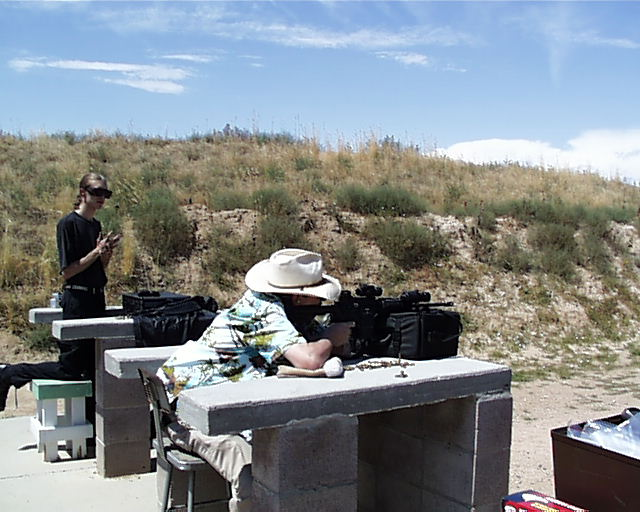

A Day at the Range
L. Neil Smith's Blog
August 18, 2003, continuedPage 20

We come at last to my brother and what my old mentor Chuck Carper* would call his "Buck Rogers Blart and Bonkus Gun". It's basically a CAR-15 tricked out with a whole lot of bells and whistles. He carried it in his car before his recent retirement from the sheriff's department.
*If you've read Tom Paine Maru (soon to be available online) then you've met Chuck as the old gunsmith Charles C. Charles. He was my father's best friend, taught me a lot about shooting and hunting and even more about gunsmithing. He taught my brother how to make springs (which is no small thing). He taught me other things, as well, and he mixed the first (and last) Martini I ever drank.
To Page 19 Page 20